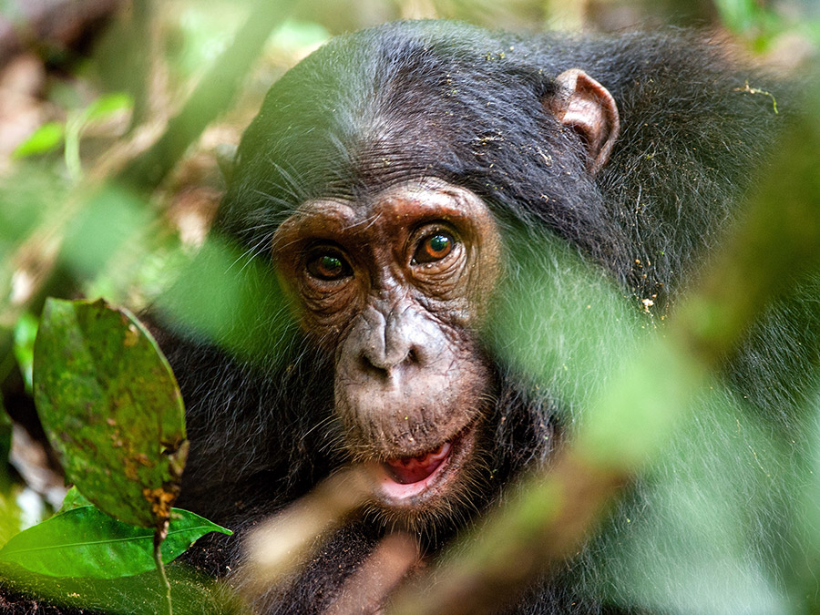
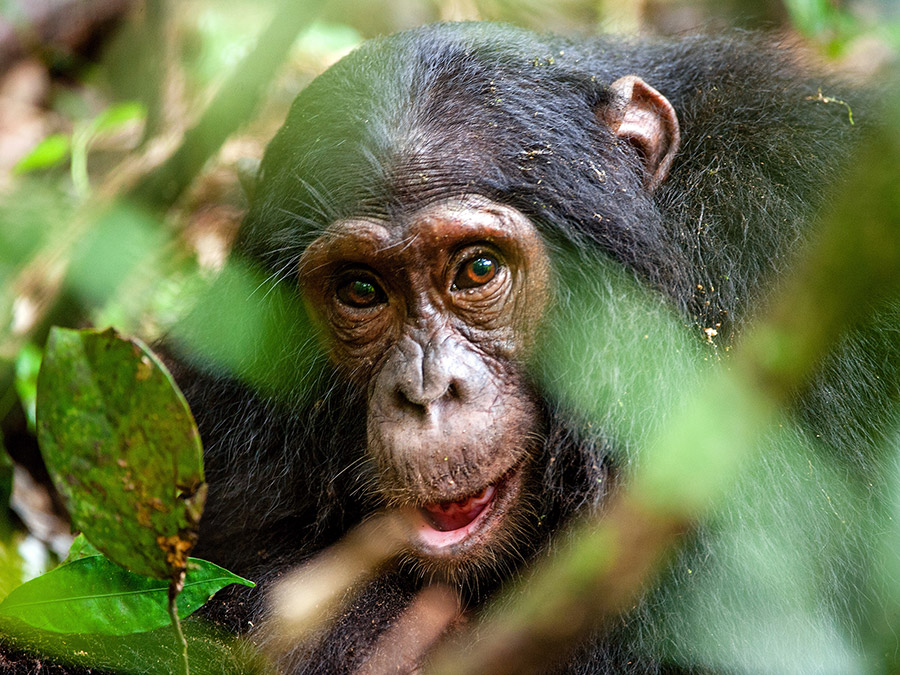

Hello, let's talk about Apes
About Apes
Apes are humanity's closest living relatives. In fact, people are apes; humans share about 98 percent of their DNA with chimpanzees. The non-human types of apes are divided into two groups: great apes — gorillas, bonobos, chimpanzees and orangutans — and lesser apes — gibbons and siamangs. Apes are not monkeys; they belong to different branches of the Simian infraorder, and there are several physical differences. Apes do not have tails, while most monkeys do, and apes are typically larger than monkeys, according to the Smithsonian National Zoological Park. Apes' noses are short and broad, while monkeys' noses are more snout-like. Apes also have larger brains than monkeys, and they are capable of using tools and learning language.
Apes picture

 

Fun fact
- Humans are Great Apes
Great apes include gorillas, chimpanzees (which include bonobos), orangutans and humans. Our closest relative is the chimpanzee - we share more than 98 percent of our DNA with these great apes! The ABQ BioPark houses three species of great apes - Western lowland gorillas, Sumatran orangutans and common chimpanzees. - Chimpanzees Have a Group Hierarchy Chimpanzees live in large social groups with a defined hierarchy of power. The alpha male is the highest-ranking male that controls the group and maintains order during disputes. Females also have their own ranking order. Sometimes the dominant male is not the largest or strongest - he acquires his position instead through manipulation and political tactics like cultivating allies.
- Gorillas Are Extremely Intelligent
Like all great apes, gorillas are extremely intelligent. Koko, a famous gorilla living in California, can communicate with more than 1,000 hand signals in "Gorilla Sign Language," a modified version of American Sign Language. Gorillas can also use tools and have various methods of communication, including around 25 different sounds. - Bonobos Live in Peaceful Matriarchal Societies Bonobos have a reputation for peaceful and diplomatic female-led societies. These highly social great apes are matriarchal, meaning that females have a higher social status than males and social interactions are female-centered and female-dominated. The societies are also egalitarian in nature and strong bonds among females is very important.